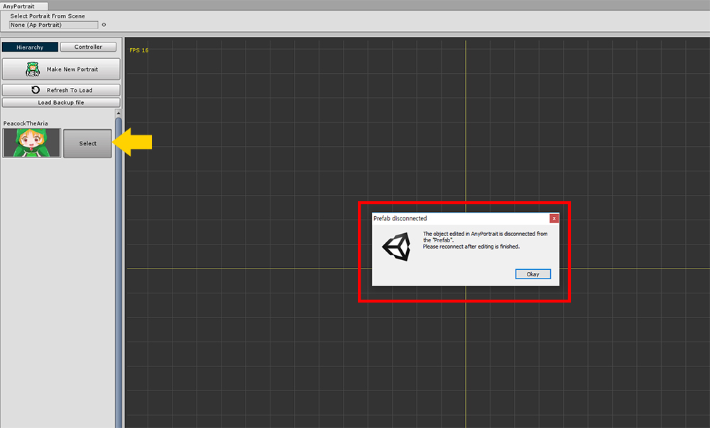
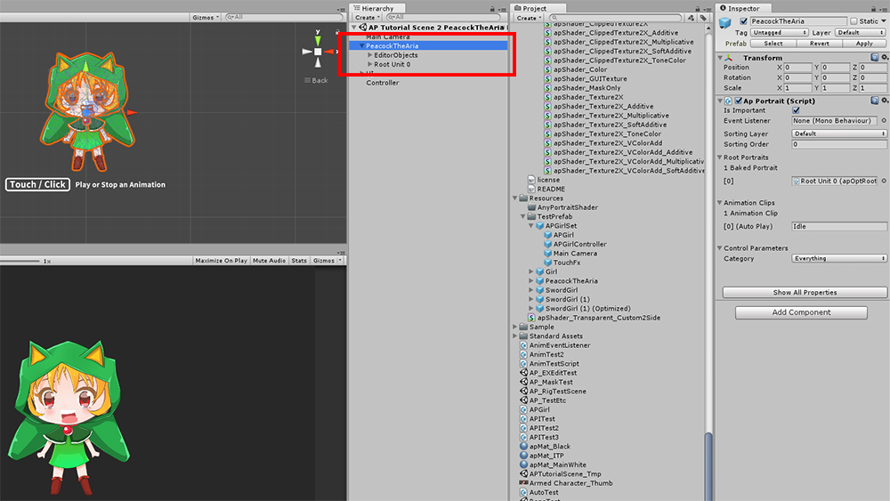
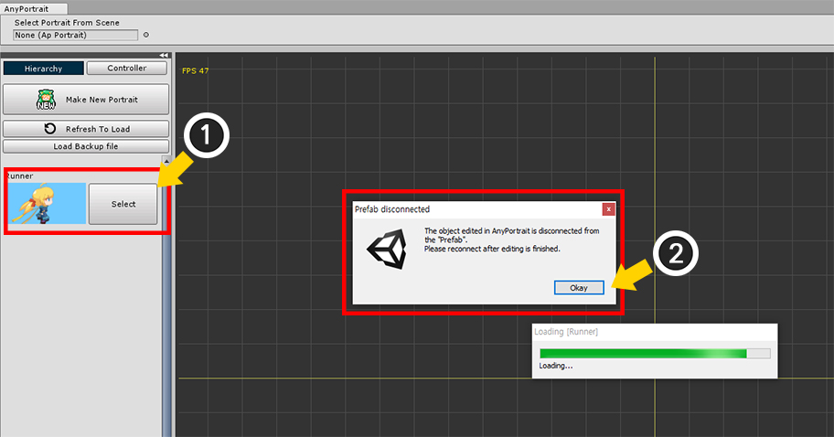
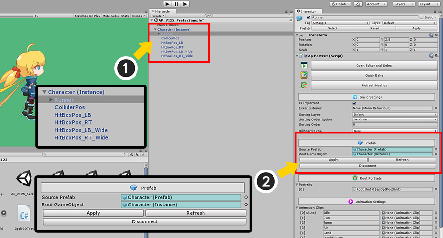
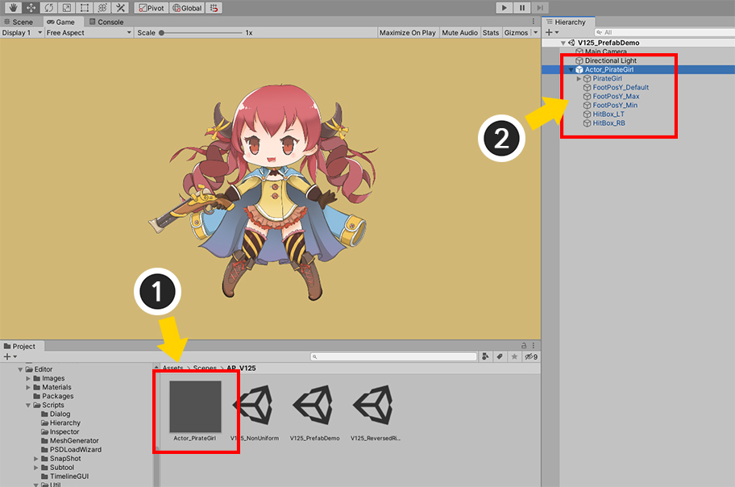

AnyPortrait > 메뉴얼 > 프리팹 편집하기
프리팹 편집하기
1.2.5
유니티로 게임을 만드는 과정에서 프리팹(Prefab)은 중요한 역할을 합니다.
게임 오브젝트를 리소스로 만들 수 있기 때문에 필수적으로 사용되는 기능입니다.
이전버전까지의 AnyPortrait로 만든 캐릭터를 프리팹으로 저장할 때 몇가지 문제점이 있었습니다.
그래서 v1.0.3 부터 프리팹에 대한 처리 방식이 변경되어 이 페이지에서 안내를 드립니다.

AnyPortrait로 만든 캐릭터를 프리팹으로 저장한 화면입니다.
Hierarchy에서 푸른색 글씨로 변한 것을 볼 수 있습니다.

프리팹으로 저장된 캐릭터를 편집하려고 하면 안내 메시지가 나타납니다.
AnyPortrait는 기본적으로 씬에 위치한 GameObject를 편집하는 방식으로 개발되어, 프리팹 상태일 경우 문제가 발생할 수 있기 때문입니다.
확인 버튼을 누르면 프리팹과 연결이 끊기며, 일반적인 GameObject로 변환됩니다.

다시 Hierarchy를 확인하면 푸른색이 아닌 기본색으로 바뀌어 있음을 확인할 수 있습니다.
이 상태는 프리팹과 "연결이 끊긴" 상태이며, 완전히 프리팹 정보가 사라진 것은 아닙니다.

모든 편집이 끝나면 Apply 버튼을 눌러서 프리팹으로 다시 저장하면 됩니다.
주의
AnyPortrait로 편집하는 도중에 프리팹으로 강제로 변환하는 경우, 에디터에서 제대로 데이터를 저장하지 못할 수 있습니다.
위에서 안내한 것과 같이, 편집 도중에는 프리팹 상태가 아니어야 합니다.
그리고, 프리팹으로 다시 변환한 이후에 꼭 저장을 하셔야 합니다.
프리팹 상태 UI (v1.2.5)
저희 팀은 여러 사용자로부터 유니티 에디터상에서 프리팹을 다루는 것에 대해서 많은 피드백을 받았습니다.
또한 Unity 2018.3에 추가된 새로운 방식의 프리팹 시스템이 AnyPortrait의 프리팹 관리 방식과 정상적으로 호환되지 않는 문제가 있었습니다.
이러한 이유로, 프리팹을 AnyPortrait의 UI에서 직접 제어하여 Apply 또는 Disconnect를 할 수 있는 기능이 v1.2.5에 추가되었습니다.
(기본적인 프리팹 관리 방식은 위의 설명과 같습니다.)

(1) 캐릭터가 프리팹 에셋(Prefab Asset)의 형태로 저장된 상태입니다.
(2) 프리팹 에셋을 프리팹 인스턴스(Prefab Instance)로서 씬에 배치합니다.
(프리팹 에셋 상태에서 편집할 수 없으므로, 항상 씬에 배치한 후 편집해주세요.)

기존과 마찬가지로 프리팹 인스턴스 상태에서 AnyPortrait 에디터를 열어서 편집을 해봅시다.
(1) 프리팹 인스턴스 상태의 캐릭터를 선택하면,
(2) 프리팹 상태에서는 편집이 될 수 없어서 자동으로 Disconnect 된다는 메시지가 나타납니다.

캐릭터를 편집하고 Bake를 한 후, 다시 유니티 씬으로 돌아옵니다.
(1) 프리팹 인스턴스였던 캐릭터를 선택합니다. Hierarchy에서 해당 캐릭터 GameObject의 이름이 푸른색이 아닌 검은색으로 바뀐 것을 볼 수 있습니다. 이것은 현재 프리팹 인스턴스가 아니거나 Disconnected 상태가 되었기 때문입니다.
(2) v1.2.5에서 추가된 프리팹 상태 UI를 Inspector에서 볼 수 있습니다.
(3) 프리팹 상태 UI에 있는 Apply 버튼을 눌러서 다시 프리팹 원본과 연결된 상태로 만들어봅시다.
(Unity 2018.3보다 이전 버전이라면 (4)와 같이 Inspector 상단의 Apply 버튼을 눌러도 됩니다.)

(1) Hierarchy에서의 GameObject들의 이름이 다시 푸른색으로 바뀌었습니다. 이제 "연결된 프리팹 인스턴스 상태"로 바뀐 것입니다.
(2) 이것은 AnyPortrait의 프리팹 상태 UI에서도 확인할 수 있습니다.

v1.2.5에 추가된 프리팹 상태 UI입니다.
프리팹 인스턴스인 경우에만 이 UI가 Inspector에 나타납니다.
원본인 프리팹 에셋과 동기화가 된 경우(Connected)에서는 위 이미지와 같이 푸른색으로 UI가 나타납니다.
반대로, 프리팹 에셋과 동기화가 되지 않은 경우(Disconnected 또는 Missing)에서는 아래의 이미지와 같이 붉은색의 UI가 나타납니다.
1. Source Prefab : 원본이 되는 프리팹 에셋입니다. 동기화가 되지 않았다면 어떤 상태인지 나타납니다.
2. Root GameObject : 이 프리팹 인스턴스의 루트입니다. AnyPortrait로 제작된 GameObject 뿐만 아니라, 루트 GameObject를 기준으로 동기화를 할 수 있습니다.
3. Apply : 프리팹 인스턴스의 변경 내역을 프리팹 에셋에 적용하여 동기화를 합니다. Revert를 하고자 하는 경우엔 유니티의 UI를 활용하거나 인스턴스를 삭제해주세요.
4. Refresh : 프리팹 에셋과의 동기화 상태를 다시 갱신합니다.
5. Disconnect : 프리팹 에셋과의 동기화를 해제합니다.
Unity 2018.3에 도입된 새로운 프리팹 시스템
Unity 2018.3에서는 새로운 프리팹 시스템이 도입되었습니다.
이 버전부터는 기존과 다르게 프리팹을 더 다양한 방식으로 관리하고 편집할 수 있습니다.
- 프리팹 메뉴얼 (유니티 공식 메뉴얼)
안타깝게도, 새로운 프리팹 시스템은 기존의 프리팹 시스템과 내부적으로 너무 큰 차이를 가지고 있어서,
AnyPortrait의 기존의 방식은 새로운 프리팹 시스템에 대해 호환성을 가질 수 없었습니다.
프리팹 인스턴스 상태를 유지하면서 AnyPortrait 에디터로 편집하는 것은 불가능했으며, 오직 편집된 캐릭터를 프리팹 에셋으로 덮어쓰는 방법만 유효했습니다.
하지만 위에서 소개된 프리팹 상태 UI를 이용하여 프리팹 에셋과의 연결 정보를 가능한 유지한 상태에서 동기화를 하는 것이 가능해졌습니다.
v1.2.5에서 기존의 방식과 다르게 어떻게 개선되었는지 아래의 설명을 확인해보세요.

새로운 프리팹 시스템에서의 화면입니다.
(1) 원본이 되는 프리팹 에셋입니다.
(2) 프리팹 에셋을 씬에 배치한 프리팹 인스턴스입니다.

프리팹 인스턴스를 선택하고 AnyPortrait 에디터로 편집하려고 하면, 기존과 마찬가지로 프리팹 에셋과의 연결이 해제된다는 메시지가 나타납니다.

Bake를 실행하고 유니티 씬으로 돌아오면 프리팹 에셋과의 연결이 해제되었으며, 프리팹 인스턴스 상태가 아닌 것을 볼 수 있습니다.
이 상태는 프리팹 원본과의 연결 정보가 없는 상태이기 때문에, 기존의 방식에서는 다시 프리팹 에셋을 만들거나 덮어씌워야 했습니다.

하지만 AnyPortrait 캐릭터를 선택하고 Inspector를 확인해보면 "프리팹 상태 UI"가 나타난 것을 볼 수 있습니다.
AnyPortrait에서는 "마지막 프리팹 연결 정보"가 기록되어, 사용자들에게 프리팹 동기화 기능들을 제공합니다.
(실제로는 유니티에서는 프리팹 연결 정보가 모두 없어져서 일반적인 GameObject로 돌아간 상태입니다.)
(1) 프리팹 상태 UI에서 (2) Apply 버튼을 눌러봅시다.

(3) GameObject들이 다시 프리팹 인스턴스로 복구되었으며, 편집된 캐릭터가 프리팹 에셋으로 적용되어 동기화가 완료된 것을 볼 수 있습니다.

Unity 2018.3 및 이후 버전에서는 AnyPortrait로 편집된 캐릭터에 대해서 프리팹 연결 정보가 내부적으로 유지 되지 않지만,
AnyPortrait 자체에서 프리팹 연결 정보를 별도로 기록하여 동기화를 할 수 있습니다.
반대로, 프리팹 연결 정보를 해제할 수도 있는데, 다음의 두가지 방식이 있습니다.
(1) Disconnect 버튼을 누르면 프리팹 에셋과의 동기화를 해제합니다. 하지만 연결 정보는 삭제하지 않으므로 다시 Apply를 눌러서 동기화를 수행할 수 있습니다.
(2) Clear 버튼을 누르면 프리팹 에셋과의 동기화를 해제하면서 연결 정보를 완전히 삭제합니다. 이제 이 GameObject는 프리팹 인스턴스로서의 역할을 완전히 상실합니다.
주의 사항
1. 이 방식은 유니티에서 제공하는 기능이 아닌 AnyPortrait 자체의 기능이므로, 프리팹 원본의 변경사항이 있을 경우 올바르게 동작하지 않을 수 있습니다.
2. 별도의 방식으로 연결 정보를 기록하는 만큼, AnyPortrait v1.2.5로 업데이트 한 직후에는 프리팹 인스턴스로 복구할 수 없을 수 있습니다. 이 경우엔 프리팹 에셋을 다시 만들거나 덮어 씌워서 동기화를 한 이후에 프리팹 인스턴스를 만들어주세요.
새로운 프리팹 시스템의 가장 큰 특징 중 하나는 "프리팹 원본을 직접 편집"할 수 있다는 것입니다.
하지만, 이 시스템의 일부 기능들은 안정화되지 못한 부분이 있어서, 저희 팀이 완벽히 대응할 수 없었습니다.
따라서 현재로는 프리팹 원본을 대상으로 AnyPortrait 에디터에서 편집하는 것은 제한됩니다.

(1) 프리팹 에셋 원본을 선택하고, 프리팹 원본을 편집할 수 있는 상태로 전환합니다.
(2) 프리팹 내부의 AnyPortrait 캐릭터를 선택합니다.
(3) 프리팹 에셋 원본이므로 에디터를 열 수 없다는 메시지가 나타납니다.
위와 같은 메시지는 Unity 2020.1 부터 나타나며, Unity 2018.3부터 Unity 2020.1 사이의 버전에서는 해당 메시지가 나타나지 않습니다.
하지만 이것은 해당 버전에서 "프리팹 에셋인지 프리팹 인스턴스인지 구분할 수 없기 때문"에 AnyPortrait로 편집할 수 있는 것처럼 보여질 뿐이며, 실제로 프리팹 원본을 편집하면 여러가지 문제들이 발생할 수 있습니다.
따라서 항상 아래와 같은 방법으로만 프리팹을 편집하시길 바랍니다.

(1) 편집하고자 하는 프리팹 에셋을 선택하고 씬으로 배치합니다.
(2) 씬에 배치된 프리팹 인스턴스를 선택하면 에디터로 편집하거나 Bake를 할 수 있습니다.
(3) Bake를 하거나 Refresh Meshes 버튼을 눌러서 렌더링된 캐릭터를 확인한 후, 다시 동기화를 하시길 바랍니다.